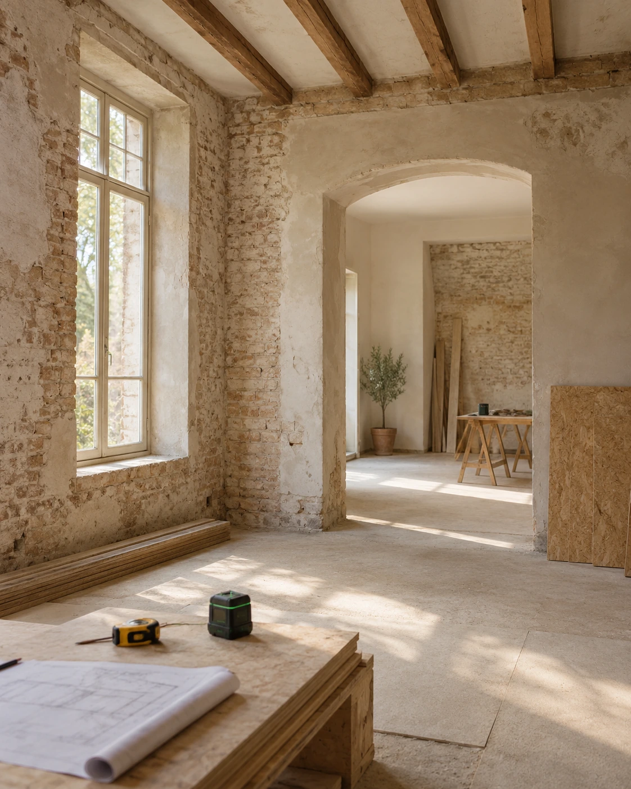
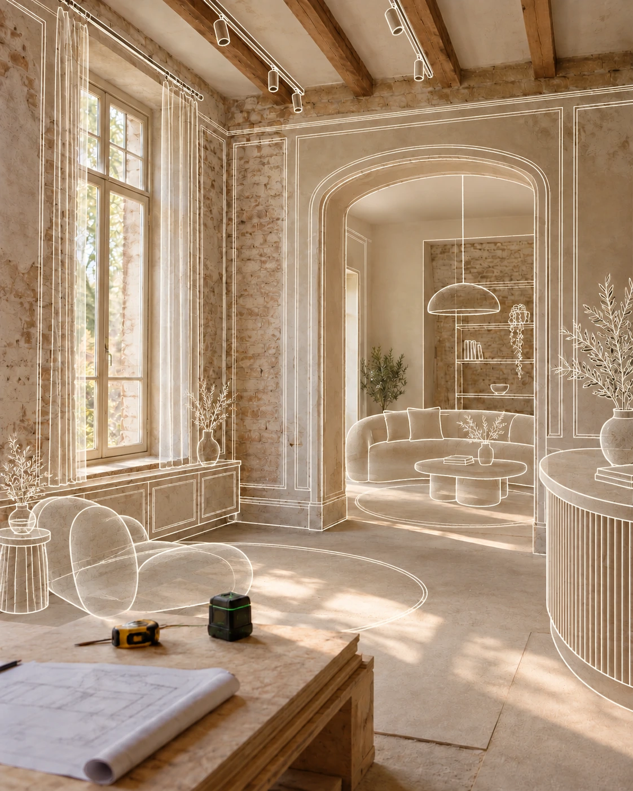
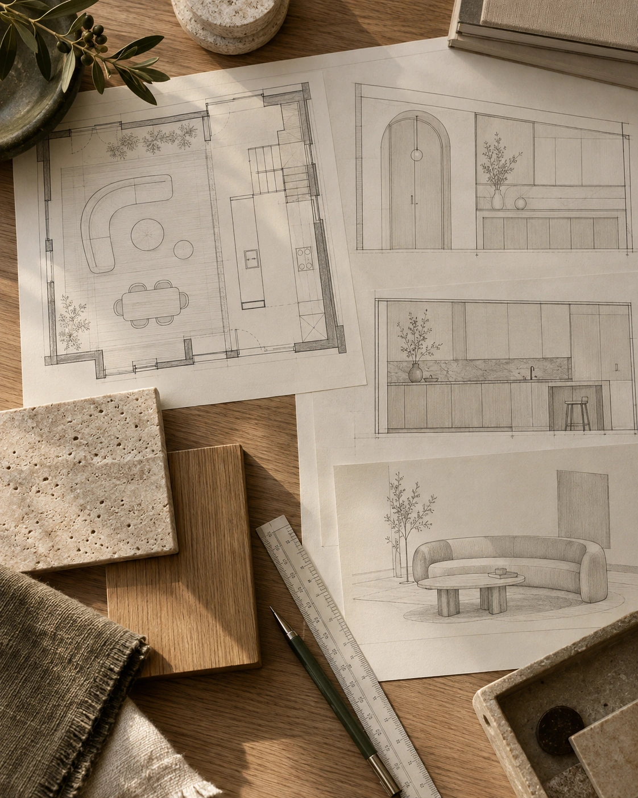
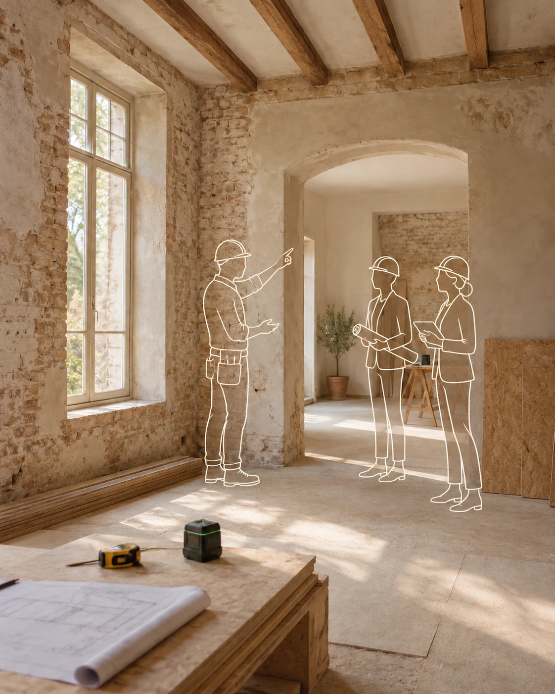

Krok po kroku, razem z Tobą
Proces
projektowania.
Zaczynamy od Ciebie. Potem nadajemy Twoim potrzebom kształt — od pierwszej rozmowy po realizację wnętrza.
Poznaj etapyIlustracje koncepcyjne pokazujące etapy współpracy.
-
Etap 01 · Poznajmy się
Konsultacja wstępna.
Poznajemy Twoje oczekiwania, codzienność i potrzeby. Rozmawiamy o możliwościach finansowych oraz ustalamy plan i czas współpracy.
Następny etap -
Etap 02 · Poznajemy przestrzeń
Inwentaryzacja.
Zbieramy pomiary i zapisujemy układ pomieszczeń. Dzięki temu dalsze decyzje projektowe opierają się na dokładnym obrazie Twojej przestrzeni.
Następny etap
-
Etap 03 · Nadajemy pomysłom kształt
Koncepcja projektowa.
Proponujemy funkcjonalne rozplanowanie wnętrza i jego kierunek wizualny. Tablice inspiracji oraz wizualizacje 3D pozwalają Ci zobaczyć przyszłą przestrzeń.
Następny etap
-
Etap 04 · Dopracowujemy szczegóły
Projekt wykonawczy.
Opracowujemy dokumentację dla ekip wykonawczych. Przygotowujemy rysunki oraz spisy wybranych materiałów, mebli i elementów wyposażenia.
Następny etap
-
Etap 05 · Czuwamy nad realizacją
Opcjonalnie
Nadzór autorski.
Możemy towarzyszyć Ci również podczas realizacji, czuwając nad zgodnością powstającego wnętrza z przyjętą koncepcją.
Zacznijmy od rozmowy
Pierwszy krok należy do Ciebie